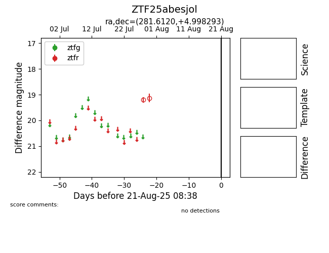

Target ZTF25abesjol at 2025-08-21 08:38, see:
FINK: fink-portal.org/ZTF25abesjol
Lasair: lasair-ztf.lsst.ac.uk/objects/ZTF25abesjol
ALeRCE: alerce.online/object/ZTF25abesjol
alt names
ZTF25abesjol (ztf,alerce)
coordinates:
equatorial (ra, dec) = (281.6120,+4.99829)
galactic (l, b) = (36.8178,+3.38417)
photometry
